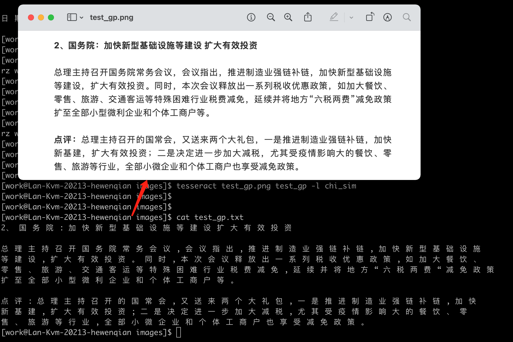

利用OCR识别图片文字
前言
tesseract 是谷歌赞助开发的一个光学字符识别引擎，是目前最流行的 OCR 软件之一。它支持基于神经网络的线条识别(>=4) 和传统的字符模式识别(<4)。 现在我们尝试一下利用 tesseract 进行图像文字识别。
安装
tesseract-ocr 依赖 leptonica， 而安装leptonica前需要先安装常用图片库
yum install gcc gcc-c++ make
yum install autoconf automake libtool
yum install libjpeg-devel libpng-devel libtiff-devel zlib-devel
# 到 http://www.leptonica.org/ 找（http://www.leptonica.org/download.html）
wget http://www.leptonica.org/source/leptonica-1.82.0.tar.gz
tar -zxvf leptonica-1.82.0.tar.gz
./configure
# sudo
make && make install
vim /etc/profile
export LD_LIBRARY_PATH=$LD_LIBRARY_PAYT:/usr/local/lib
export LIBLEPT_HEADERSDIR=/usr/local/include
export PKG_CONFIG_PATH=/usr/local/lib/pkgconfig
# 应用刚刚修改的 /etc/profile
source /etc/profile
接下来是安装 tesseract
# 笔者是直接下载的 github 源码
# pass
# 解压
unzip tesseract-main.zip
cd tesseract-main
# 以下命名均用 root 账户执行
sudo ./autogen.sh
sudo ./configure
sudo make
sudo make install
sudo ldconfig
# tesseract -v 检查是否成功
成功如下所示
tesseract github 源码，这个版本是 5.0.1，注意这个版本跟大蓝的 KVM 环境不兼容，建议换 tesseract 3 的哈（测试的话搭配 centos-scl 也可快速处理，下面解释）
问题解决
编译安装过程中可能会遇到一个问题： configure: error: * A compiler with support for C++17 language features is required. 这是因为我们安装的 tesseract 是最新的需要 gcc 的新版才能支持 我们可以 yum remove gcc 重装，也可以通过 centos 的 scl 软件库，但是我是在自己 KVM 的测试，而我们的 centos 是 7.2 默认 yum 匹配安装的 gcc 版本是 4.8 跟上述安装的 tesseract 版本没有兼容（如果想在 gcc4.8 下运行的话,tesseract 就不要用太新的版本，我也是后来才发现哈哈，看更新日志找 tesseract 3 应该就可以了）
# scl 软件库
yum install centos-release-scl
yum install devtoolset-8-gcc devtoolset-8-gcc-c++
scl enable devtoolset-8 -- bash
需要注意的是通过 scl 软件库管理的 gcc 版本是仅当前 scl 会话的！类似虚拟环境概念，这是 scl 本身的特性 继续，在通过 scl 解决 gcc 版本问题后，再次编译安装即可。
测试时可能会遇到 Tesseract couldn't load any languages! 的问题
原因是安装的 tesseract 没有附带相应的语言包或者语言包的路径不对 检查安装命令的 tessdata 目录（如上 /usr/local/share/tessdata/eng.traineddata），以 eng.traineddata 为例，如果没有对应的语言包可以到 github 下载
然后将其移到对应的目录下
sudo mv tessdata/eng.traineddata /usr/local/share/tessdata/eng.traineddata
运行如下：
[work@Lan-Kvm-20213-hewenqian tesseract-main]$ tesseract images/test_tessdata.png images/test_tessdata.txt
[work@Lan-Kvm-20213-hewenqian tesseract-main]$ cat images/test_tessdata.txt
cat: images/test_tessdata.txt: 没有那个文件或目录
[work@Lan-Kvm-20213-hewenqian tesseract-main]$ ll images/
总用量 2736
-rw-r--r-- 1 work work 1660829 2月 16 14:10 1大蓝&广州八五后-联合运营协议（刀塔三国）.pdf
-rw-r--r-- 1 work work 941236 2月 16 15:41 test_con.png
-rw-r--r-- 1 work work 192102 2月 16 15:46 test_tessdata.png
-rw-rw-r-- 1 work work 791 2月 16 15:59 test_tessdata.txt.txt
[work@Lan-Kvm-20213-hewenqian tesseract-main]$ cat images/test_tessdata.txt.txt
These language data files only work with Tesseract 4.0.0 and newer versions. They are based on the sources in
tesseract-ocr/langdata on GitHub. (still to be updated for 4.0.0 - 20180322)
These have models for legacy tesseract engine (--oem 0) as well as the new LSTM neural net based engine (--
oem1).
The LSTM models (--oem 1) in these files have been updated to the integerized versions of tessdata_best on
GitHub. So, they should be faster but probably a little less accurate than tessdata_best.
tessdata_fast on GitHub provides an alternate set of integerized LSTM models which have been built with a
smaller network. tessdata_fast files are the ones packaged for Debian and Ubuntu.
The legacy tesseract models (--oem 0) have been removed for Indic and Arabic script language files.
[work@Lan-Kvm-20213-hewenqian tesseract-main]$
如果要识别中文还需要做更多 首先看下现在 tesseract 支持了哪些语言
[work@Lan-Kvm-20213-hewenqian images]$ tesseract --list-langs
List of available languages in "/usr/local/share/tessdata/" (1):
eng
只有一个 eng，其它语言的话需要下载其它语言包，如中文的话有四个语言包可选（traineddata 后缀的文件都是经过神经网络训练后的字库文件）
依样画葫芦放到对应的语言包文件夹里即可
work@Lan-Kvm-20213-hewenqian tessdata]$ rz
rz waiting to receive.**B0100000023be50
[work@Lan-Kvm-20213-hewenqian tessdata]$ # Received /Users/hewenqian/Downloads/chi_sim_vert.traineddata
[work@Lan-Kvm-20213-hewenqian tessdata]$ rz
rz waiting to receive.**B0100000023be50
[work@Lan-Kvm-20213-hewenqian tessdata]$ # Received /Users/hewenqian/Downloads/chi_sim.traineddata
[work@Lan-Kvm-20213-hewenqian tessdata]$ rz
rz waiting to receive.**B0100000023be50
[work@Lan-Kvm-20213-hewenqian tessdata]$ # Received /Users/hewenqian/Downloads/chi_tra_vert.traineddata
[work@Lan-Kvm-20213-hewenqian tessdata]$ rz
rz waiting to receive.**B0100000023be50
[work@Lan-Kvm-20213-hewenqian tessdata]$ # Received /Users/hewenqian/Downloads/chi_tra.traineddata
[work@Lan-Kvm-20213-hewenqian tessdata]$ ll
总用量 105772
-rw-r--r-- 1 work work 44366093 2月 16 16:54 chi_sim.traineddata
-rw-r--r-- 1 work work 2470991 2月 16 16:55 chi_sim_vert.traineddata
-rw-r--r-- 1 work work 59025073 2月 16 17:03 chi_tra.traineddata
-rw-r--r-- 1 work work 2368306 2月 16 17:04 chi_tra_vert.traineddata
drwxrwxr-x 2 work work 4096 2月 16 15:09 configs
-rw-rw-r-- 1 work work 33 2月 14 20:25 eng.user-patterns
-rw-rw-r-- 1 work work 27 2月 14 20:25 eng.user-words
-rw-r--r-- 1 root root 22092 2月 16 15:09 Makefile
-rw-rw-r-- 1 work work 184 2月 14 20:25 Makefile.am
-rw-r--r-- 1 root root 22188 2月 16 14:53 Makefile.in
-rw-rw-r-- 1 work work 572 2月 14 20:25 pdf.ttf
drwxrwxr-x 2 work work 143 2月 16 15:09 tessconfigs
[work@Lan-Kvm-20213-hewenqian tessdata]$ sudo mv ./chi* /usr/local/share/tessdata/.
然后使用上需要指定语言
tesseract test_con.png test_con3 -l chi_sim
效果如图，识别率还是很高的，不过也有测试了遇到合同盖章之类的带奇怪图案的话识别会出错很多，不过暂时不是考虑的范围了。

这是命令行层面的演示，那么在程序中如何灵活使用呢，下面介绍在 python 中如何处理 PDF 转换图片，然后使用 tesseract 提供的包完成图片识别